The Sakay Partido prototype consists of 16 screens covering the complete user journey — authentication, ride booking, live tracking, payment, and emergency safety features. Each screen was designed for motorcycle and tricycle commuters in the Partido area, Camarines Sur. The walkthrough below is organized by user flow.
Flow 1 — Onboarding
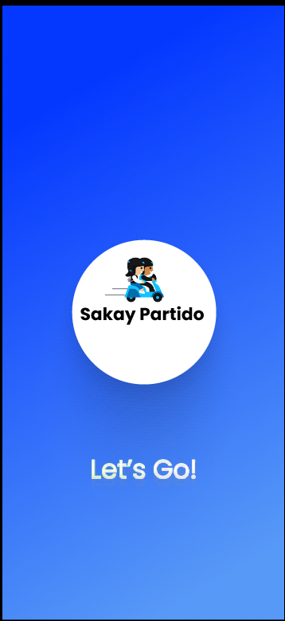
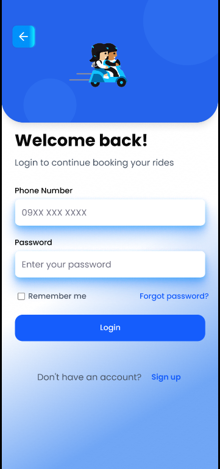
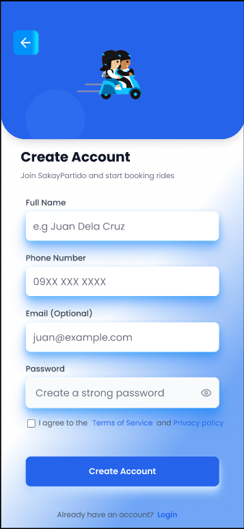
Flow 2 — Booking a Ride
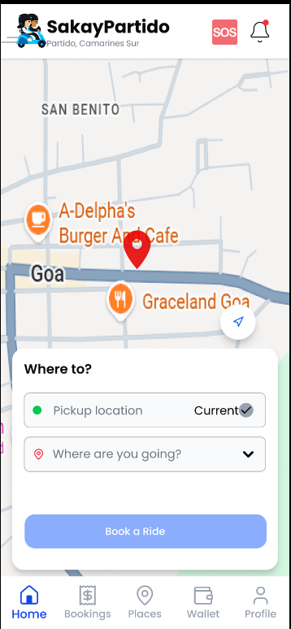
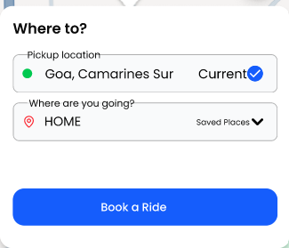
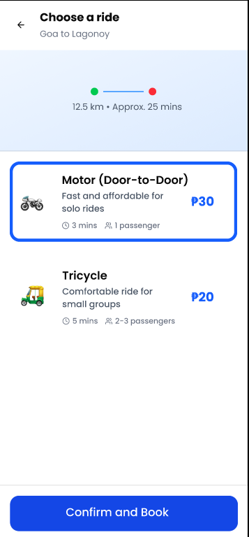
Flow 3 — During the Ride
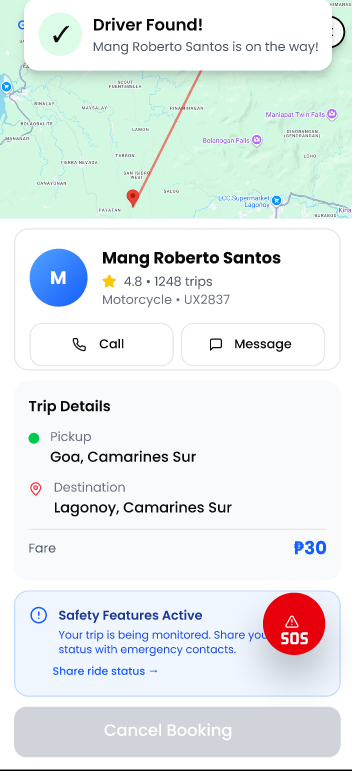
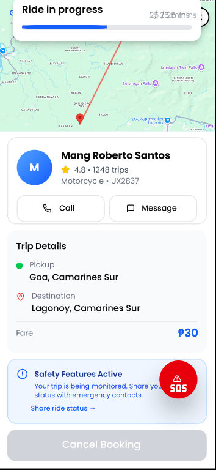
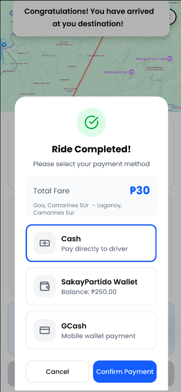
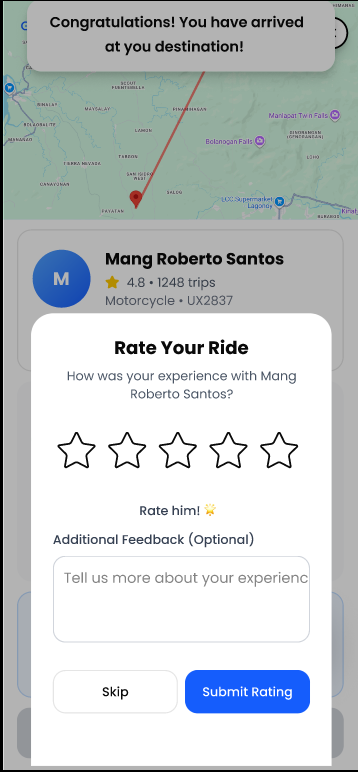
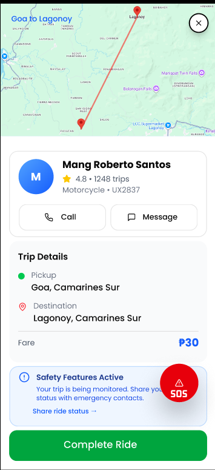
Flow 4 — App Features
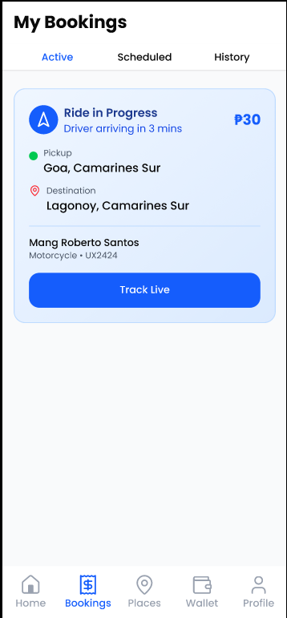
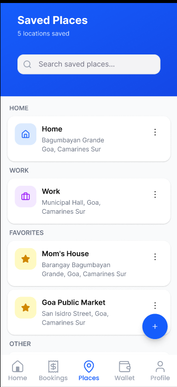
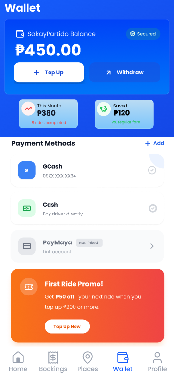
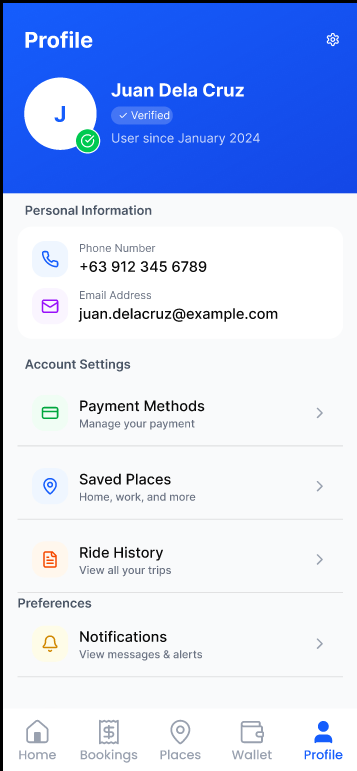
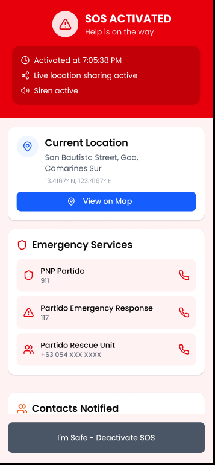
Walkthrough Summary
16 Screens
Full end-to-end prototype from splash screen to ride completion and emergency features.
2 Ride Types
Motor (door-to-door) and Tricycle (shared) are tailored to Partido commuters.
Safety-First Design
SOS button, live location sharing, local emergency contacts, and siren, all accessible during a ride.
3 Payment Methods
Cash, SakayPartido Wallet, and E-wallets, covering banked and unbanked users alike.